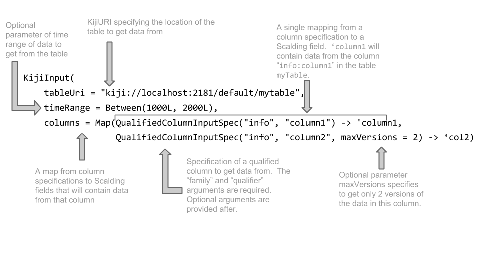
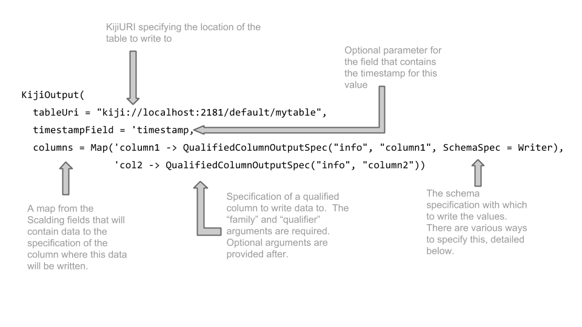

KijiExpress Sources
Scalding provides the Source abstraction for reading and writing data as a part of flows. Express
provides the KijiSource for reading and writing data to Kiji tables, and HFileKijiSources for
writing data to HFiles. The following sections will explore how to use KijiSource and
HFileKijiSource as part of flows.
Contents:
- KijiInput is for reading from a Kiji table.
- KijiOutput is for writing to a Kiji table.
- HFileKijiOutput is for writing to HFiles that will be bulk-loaded into Kiji.
KijiInput
KijiInput specifies how data should be read from a KijiTable and converted into tuples in a flow.
Each row from the Kiji table will populate a single tuple, but the fields of the tuple and whether
the fields hold a column or an entire column family is configurable. Additionally, KijiInput
allows specifying a specific timerange of cells to be read from the table.
The tuples that result from using a KijiInput contain a field per input column in the map. Each
field will contain a Seq
of Cell objects. A Scala Seq is very similar to List, and it supports many higher-order Scala
operations such as map, filter, and fold. Cell objects are simple data containers which
hold the family, qualifier, version (or timestamp), and datum. The datum field holds the
value of the cell, and can be accessed with myCell.datum.
The basic KijiInput syntax looks like this. More details on configuration options follow.

Here are the parameters to KijiInput:
| Parameter | Required? | Default value |
|---|---|---|
| timeRange | no | All |
| Column to Field Mapping | yes | -- |
Here are the parameters to QualifiedColumnInputSpec and ColumnFamilyInputSpec:
| Parameter | Required? | Default value |
|---|---|---|
| maxVersions | no | 1 |
| schemaSpec | no | Writer |
| filters | no | no filter |
| paging | no | Off |
Specifying a Timerange (Optional)
Timestamps in Kiji, like timestamps in HBase, can be used as actual timestamps for the data in a table, or to attach version numbers to cells. You should be careful when attaching version semantics to timestamps, as noted in this blog post.
You can specify an optional time range, or range of versions, on a KijiInput. (Note that the
time range is applied to the entire input request and not a single column. You can further control
how many versions of an individual column are returned by using maxVersions described further
ahead.). This time range limits the data returned from all the columns you request to that
time range. The default time range is All, which imposes no limits on the data from the columns
of the table.
Here are the provided constructors for a TimeRange:
timeRange = Before(1000L)
timeRange = After(1000L)
timeRange = Between(1000L, 2000L)
timeRange = All
The time range is an optional parameter to KijiInput, so your construction will look something like what follows:
KijiInput.builder
.withTableURI("kiji://localhost:2181/default/users")
.withTimeRange(Before(1000L))
.withColumnSpecs(
QualifiedColumnInputSpec.builder
.withColumn("userinfo", "email")
.withMaxVersions(2)
.build-> 'email,
ColumnFamilyInputSpec.builder
.withFamily("purchases")
.withMaxVersions(all)
.build-> 'purchases)
.build
Note that this means the ’email field will contain only the data in the userinfo:email column
that has version numbers before 1000L. Since we only requested a maximum of 2 versions of that column,
this means we get the most recent 2 versions of the user’s email before version 1000, even if there are
more after version 1000. This also means the 'purchases field contains all the purchases that fall
within the specified timeRange for this KijiInput, not all purchases that are in the users
table.
Specifying a Column to Field Mapping (Required)
KijiInput takes a one-to-one mapping from ColumnInputSpec to field name, as an argument to the
constructor function. This map defines the Kiji columns that will be read into specific fields of
the flow.
An exmaple KijiInput syntax looks like this:
KijiInput.builder
.withTableURI("kiji://localhost:2181/default/users")
.withColumns("info:name" -> 'name, "purchases" -> 'purchases)
.build
This constructs a KijiInput that reads from the specified table, the specified columns "info:name"
and "purchases" and puts the contents of those columns into the fields 'name and 'purchases
respectively.
However, to specify further options on the columns that you request data from, you must use the following syntax:
KijiInput.builder
.withTableURI("kiji://localhost:2181/default/users")
.withColumnSpecs(
QualifiedColumnInputSpec.builder
.withColumn("info", "name")
.build -> 'name,
ColumnFamilyInputSpec.builder
.withFamily("purchases")
.build -> 'purchases)
.build
QualifiedColumnInputSpec is used to specify a single Kiji column should
be read into a single field in each tuple. ColumnFamilyInputSpec is used to specify an entire
column family should be read into a single field in each tuple; it is particularly useful for
reading map-type column families.
In both cases, additional options on how to read the column exist, such as number of versions, filters, paging, and schema.
maxVersions
import org.kiji.express.flow
builder.withMaxVersions(2)
otherBuilder.withMaxVersions(all)
maxVersions is an Integer specifying the number of versions of this column to be in the tuple. By
default, this is 1, so you will only get the latest version within the time range of the entire
KijiInput request.
schemaSpec
This specifies the Avro schema with which to read the data in this column. For more information about Avro schemas, see the KijiSchema userguide section on Schema evolution. Here are the options:
SchemaSpec.Specific(classOf[MySpecificRecordClass]): used when you have a specific class that has been compiled by Avro.MySpecificRecordClassmust extendorg.apache.avro.SpecificRecordSchemaSpec.Generic(myGenericSchema): If you don’t have the specific class you want to use to read, you can construct a generic schema and use it as the reader schema.SchemaSpec.Writer: used when you want to read with the same schema that the data was written with. This is the default if you don’t specify anySchemaSpecfor reading.SchemaSpec.DefaultReader: specifies that the default reader for this column, stored in the table layout, should be used for reading this data. If you use this option, first make sure the column in your Kiji table has a default reader specified.
filters
By default, no filter is applied, but you can specify your own. Only data that pass
these filters will be requested and populated into the tuple. Two column filters are currently
provided: ColumnRangeFilterSpec and RegexQualifierFilterSpec. Both of these filter the data
returned from a ColumnFamilyInputSpec by qualifier in some way. These filters can be composed with
AndFilterSpec and OrFilterSpec. Filters are implemented via HBase filters, not on the client
side, so they can cut down on the amount of data transferred over your network.
ColumnRangeFilterSpec(minimum = “c”, maximum = “m”, minimumIncluded = true, maximumIncluded = false): Specifies a range of qualifiers for the cells that should be returned. In this example, it returns all data from all columns with qualifiers “c” and later, up to but not including “m”. All of the parameters are optional, so you can writeColumnRangeFilterSpec(minimum = “m”, minimumIncluded = true)to specify columns with qualifiers “m” and later.RegexQualifierFilterSpec(“http://.*”): Specifies a regex for the qualifier names that you want data from. In this example, only data from columns whose qualifier names start with “http://” are returned.AndFilterSpec(List(mRegexFilter, mQualifierFilter)): TheAndFilterSpeccomposes a list ofFilterSpecs, returning only data from columns that satisfy all the filters in theAndFilterSpec.OrFilterSpec(List(mRegexFilter, mQualifierFilter)): Is analagous toAndFilterSpec, but returns only data from columns that satisfy at least one of the filters.OrFilterSpecandAndFilterSpeccan themselves be composed.
paging
builder.withPagingSpec(PagingSpec.Cells(10))
Specifies the number of cells per page. By default, paging = PagingSpec.Off, which disables
paging. With paging disabled, all cells from the specified column will be loaded into memory at
once. If the size of all of the loaded cells exceeds the capacity of the receiving machine's main
memory, the Scalding job will fail at runtime. In these cases you can specify paging =
PagingSpec.Cells(10) to load only 10 cells at a time. The appropriate number of cells to be paged
in depends on the size of each cell. Users should try to retrieve as many cells as possible (without
causing an out of memory exception) in order to increase
performance.
See “A Note on Paging” below for more information about usage and pitfalls of paging.
A Note on Paging
If paging is enabled on a ColumnInputSpec, then the resulting fields will contain a Seq with
lazy evaluation semantics, that is, any transformations on the collection will only retrieve the
requested Cells from HBase when they are needed. This has several important performance
implications:
- Cells will only be retrieved from HBase as they are needed, so if a job does not use the cells, no further paging will be triggered.
- Full evaluation of the
Seqcan be triggered by performing an operation over entireSeq, such asmaporfilter. Holding a reference to the
Seqand triggering a full evaluation will result in the full sequence ofCells being in heap at once. To avoid this, do not hold a reference to aSeqwhich will be fully evaluated. For example, the following shows the correct way to filter aSeqofCells which may be bigger than the heap size down to a more manageable collection without running out of memory:// If you need cells with datum < 10 and you are confident that all those cells fit in memory val inMemoryList = seq.filter{cell: FlowCell[Int] => cell.datum < 10}.toList
- In particular, sorting a
Seqwill entirely materialize theCells in memory, thus if theColumnInputSpecspecifies reading more values from the Kiji column or column family than will fit in heap, anOutOfMemoryErrorwill occur.
- In particular, sorting a
KijiOutput
KijiOutput specifies how data should be written to a KijiTable from an existing pipe. Care must be
taken that the entityId field exists in the pipe you are writing, which will be used as the row key
in the Kiji table. You can use EntityId to create this field from existing fields that make up the
components of the entity Id. The types for these components should match those of the existing
table.
pipe
.map((‘product_name, ‘product_type) -> ‘entityId) { tuple: (String, Int) =>
EntityId(tuple._1, tuple._2)
}
// ...
The basic KijiOutput syntax looks like this (details about the specific configurations follow):

Here are the parameters to KijiOutput:
| Parameter | Required? | Default value |
|---|---|---|
| timeStamp | no | no timestamp field |
| Field to Column Mapping | yes | -- |
Here are the parameters to QualifiedColumnInputSpec and ColumnFamilyInputSpec:
| Parameter | Required? | Default value |
|---|---|---|
| schemaSpec | no | Writer |
Specifying the Timestamp (Optional)
If you wish to control the timestamp, or version, of the cell that gets written to the Kiji table, you may specify the field which contains this information. Again, care must be taken while handling timestamps manually. You can read more about this here.
Specifying a Field to Column Mapping (Required)
In this simplest case, this may be specified as a mapping from the field name in the pipe to the fully qualified column name of the table.
KijiOutput.builder
.withTableURI("kiji://localhost:2181/default/mytable")
.withColumns(
'column1 -> "info:column1",
'column2 -> "info:column2"
).build
As with KijiInput, we have provided syntactic sugar for the most common case of writing a field to a
column, using the default schema. Here “info:column1” is the fully qualified name of the column.
You can write fields into either a Group Type Column or Map Type Family using QualifiedColumnOutputSpec and ColumnFamilyOutputSpec respectively. You can read more about these column types here.
QualifiedColumnOutputSpec
This is used to indicate writing to a column in a Group Type Family. You will need to specify both the family and qualifier. These may be specified as two separate strings - one for family, and
You may optionally specify a schema. By default, the schema attached to or inferred from the value will be used.
The SchemaSpec is specified in much that same way as for KijiInput, which is described above
ColumnFamilyOutputSpec
This is used to write to a Kiji Column Family. It requires that you specify the name of the family. It also requires a field in the pipe that will indicate the qualifier where this value will be written.
The SchemaSpec is specified in much that same way as for KijiInput or QualifiedColumnOutputSpec.
The SchemaSpec is specified in much that same way as for KijiInput, which is described above
KijiOutput(
tableUri = "kiji://localhost:2181/default/mytable",
columns = Map('column1 -> ColumnFamilyOutputSpec("myMapTypeFamilyName",
‘qualifierField)))
HFileKijiOutput
The HFileKijiSource is a special write-only source that allows for the contents of a pipe to be
written to HFiles for later bulk loading into HBase. From an API perspective, writing a Scalding job
that writes to HFiles is as simple as:
* Writing to HFileKijiOutput instead of KijiOutput. They are the same except HFileKijiOutput
requires a hFileOutput parameter that specifies where the HFiles are output by the job.
// Create an HFileKijiOutput that writes to the table named `mytable` putting timestamps in the
// `'timestamps` field and writing the fields `'column1` and `'column2` to the columns
// `info:column1` and `info:column2`. The resulting HFiles will be written to the "my_hfiles"
// folder.
HFileKijiOutput.builder
.withTableURI("kiji://localhost:2181/default/mytable")
.withHFileOutput("my_hfiles")
.withTimestampField('timestamps)
.withColumns(
'column1 -> "info:column1",
'column2 -> "info:column2"
).build
HFiles written this way will be placed in a directory called hfiles under the specified HFileOutput directory.
KijiExpress User Guide
- What is KijiExpress?
- KijiExpress Setup
- KijiExpress Data Concepts
- Scala and Scalding Overview
- Example KijiExpress Job
- KijiExpress Sources
- Data Flow Operations in KijiExpress
- Running KijiExpress Jobs